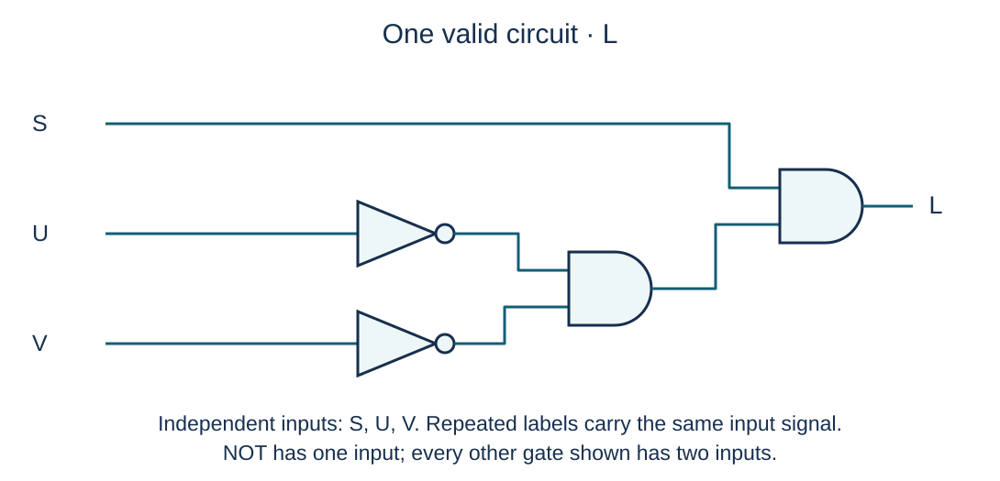

Hardware / 01
Translate a condition without changing its meaning
Look closely
A machine may start when either request is present, but only if there is no fault. What exactly must the circuit accept?
Let A = 1 mean a manual start request, B = 1 an automatic start request, and C = 1 a detected fault. Q = 1 means starting is permitted. Predict the outputs for ABC = 100, 110 and 111. Later, test your predictions in Explore.
Step 1 / 6
Define the active values
State the input meanings before translating the sentence. A and B are requests: 1 means present. C describes a fault: 1 means a fault is detected, so the safe condition is C = 0. The output Q is permission to start, not a claim that a motor has already moved.
Step 2 / 6
Translate the request condition
“Either request is present” includes the case where both requests are present. The condition is therefore A OR B. Give this intermediate signal the name X. XOR would reject A = B = 1 and would change the intended meaning.
Step 3 / 6
Require the absence of a fault
No fault is represented by NOT C. Give this signal the name Y. A request and the absence of a fault are both required, so Q = X AND Y. Substituting the definitions gives Q = (A OR B) AND (NOT C). The brackets make the two input conditions to the final AND clear.
Step 4 / 6
Build from the inner operations
Connect A and B to a two-input OR gate. Connect C to a NOT gate. Feed the OR output and NOT output into a two-input AND gate, then label the output Q. The whole circuit has three independent inputs, but each AND and OR gate still has only two inputs.
Step 5 / 6
Verify all eight combinations
List every input combination before calculating outputs. Find X and Y, then AND them to obtain Q. Trace row 110 carefully: either request is satisfied even when both requests are present, and there is no fault, so Q must be 1.
| A | B | C | X = A OR B | Y = NOT C | Q = X AND Y |
|---|---|---|---|---|---|
| 0 | 0 | 0 | 0 | 1 | 0 |
| 0 | 0 | 1 | 0 | 0 | 0 |
| 0 | 1 | 0 | 1 | 1 | 1 |
| 0 | 1 | 1 | 1 | 0 | 0 |
| 1 | 0 | 0 | 1 | 1 | 1 |
| 1 | 0 | 1 | 1 | 0 | 0 |
| 1 | 1 | 0 | 1 | 1 | 1 |
| 1 | 1 | 1 | 1 | 0 | 0 |
Step 6 / 6
Return to the original words
The permitted rows are 010, 100 and 110: at least one request is present and the fault input is 0. Every row with C = 1 is rejected. Compare these results with the original statement. Agreement between an expression and a circuit cannot rescue an incorrect translation of the starting words.
Predict a result, change one condition, then explain what happened.
Explain it yourself · Teacher-written check
Why is Q = A OR (B AND NOT C) not an equivalent translation? Give one counterexample.
Check your reasoning
For ABC = 101, the incorrect expression gives 1 because A is 1, despite a detected fault. The required expression (A OR B) AND NOT C gives 0, because absence of a fault is required for either kind of request.
Apply the idea · Teacher-written practice
Construct a Boolean expression, circuit and truth table for a lamp L that lights only when switch S is on and both override inputs U and V are off. Use input order SUV = 000 to 111.
Answer and checking points — teacher-written
Complete truth table
| S | U | V | NOT U | NOT V | Intermediate AND | L |
|---|---|---|---|---|---|---|
| 0 | 0 | 0 | 1 | 1 | 1 | 0 |
| 0 | 0 | 1 | 1 | 0 | 0 | 0 |
| 0 | 1 | 0 | 0 | 1 | 0 | 0 |
| 0 | 1 | 1 | 0 | 0 | 0 | 0 |
| 1 | 0 | 0 | 1 | 1 | 1 | 1 |
| 1 | 0 | 1 | 1 | 0 | 0 | 0 |
| 1 | 1 | 0 | 0 | 1 | 0 | 0 |
| 1 | 1 | 1 | 0 | 0 | 0 | 0 |

- L = S AND ((NOT U) AND (NOT V)).
- U and V each feed a NOT gate, and their outputs feed AND.
- The intermediate AND result and S feed a second two-input AND producing L.
- All eight rows from 000 to 111 appear once.
- L outputs are 0, 0, 0, 0, 1, 0, 0, 0.
Common error: Three conditions must be combined using a cascade of two-input gates.
Keep this idea
Define the active values, preserve each AND/OR/NOT relationship, construct inner operations first and check every input row.
You can also start from an existing circuit and work backwards to its expression and table.
Learning goals
- Construct a logic circuit from a problem statement, expression or truth table.
- Construct a truth table from a problem statement, circuit or expression.
- Construct a logic expression from a problem statement, circuit or truth table.